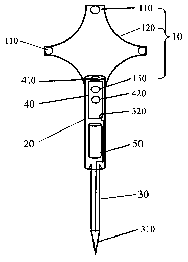

发明名称--一种用于手术导航的触敏式配准工具及配准系统
| 申请号 | CN201520436824.3 | 申请日 | 2015.06.24 | ||
| 公开（公告）号 | CN204863465U | 公开（公告）日 | 2015.12.16 | ||
| IPC分类号 | A61B19/00 | 申请（专利权）人 | 深圳安科高技术股份有限公司; | ||
| 发明人 | 高慧;陈圣国;陈长江;孔令岩;李修往; | 优先权号 |
摘要:
本实用新型公开了一种用于手术导航的触敏式配准工具及配准系统，其中，所述配准工具包括手持本体、用于产生定位信号的定位信号产生装置和用于感应人体皮肤，在感应到人体皮肤时开启所述定位信号产生装置的接触感应器。所述配准工具工作时，由接触感应器感应人体皮肤，并在感应到人体皮肤时开启定位信号产生装置；定位信号产生装置产生定位信号；由此，外部的定位系统可根据所述定位信号给配准工具定位，实现了配准，无需贴标志点就能完成配准，操作简单方便。
摘要附图:
